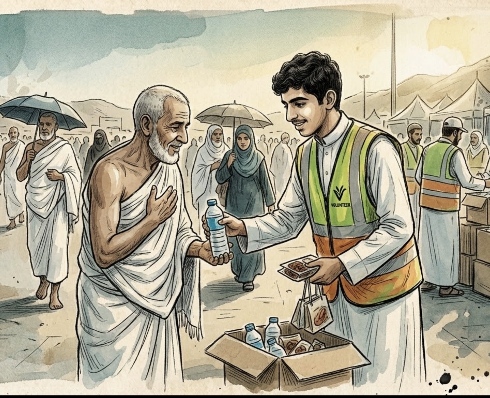
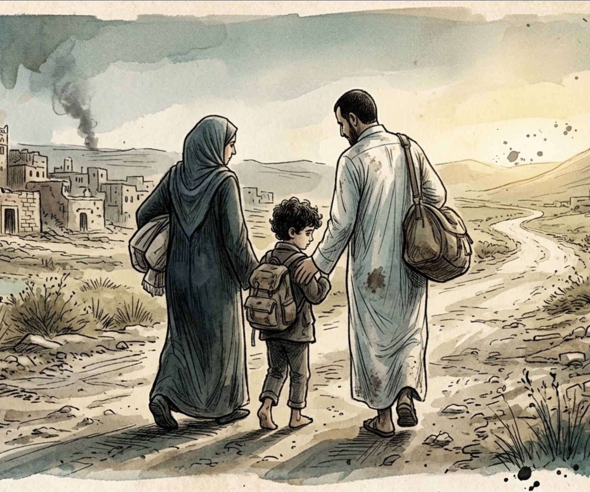

Volunteering & Community Impact

Serving Pilgrims during Hajj Season

Humanitarian & Social Initiatives
Health & Social Awareness Designs (Canva)
Over 400 Hours of Year-Round Community Service
For me, volunteering is not just an activity; it is a way of life. In Saudi Arabia, I dedicated myself to year-round humanitarian, social, and health volunteering initiatives, alongside serving pilgrims during the Hajj season. Seeing the power of visual communication, I used my self-taught graphic design skills on Canva to create impactful posters and digital content that spread health and social awareness. Completing over 400 documented volunteer hours taught me leadership, empathy, and how technology can be used to serve humanity.